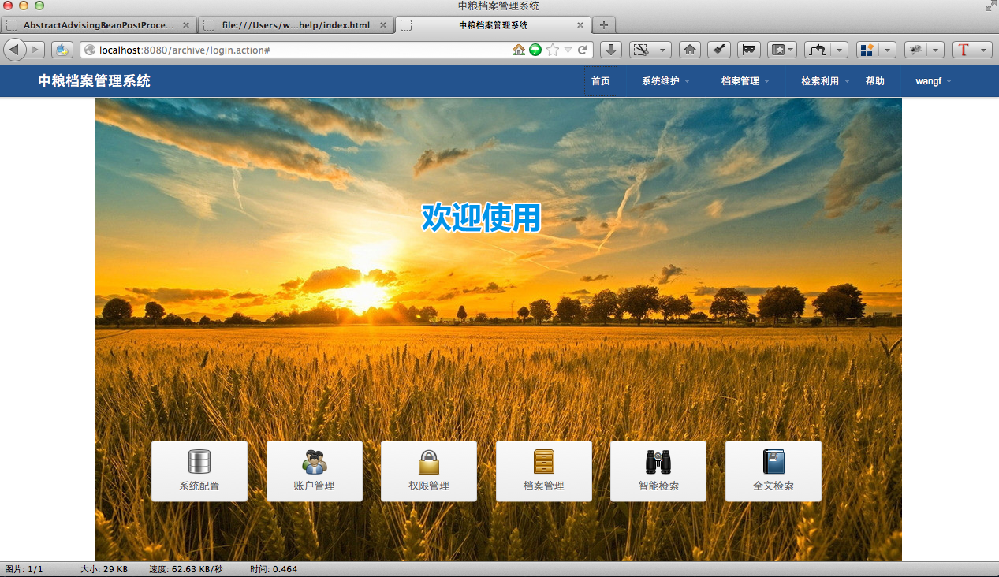
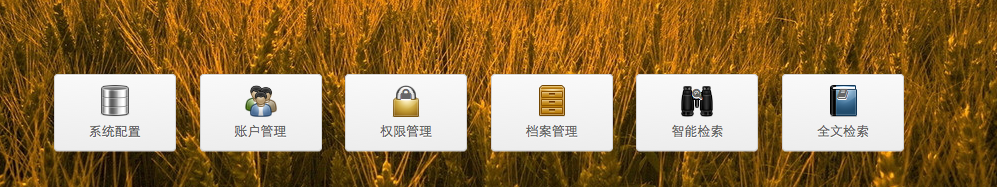

- 
-
- 操作流程
- 主页面包括两部分。系统菜单和快捷功能按钮。
- 系统菜单

- 包括系统名称和系统功能菜单。
- 系统名称可以在
［系统维护－系统配置－参数设置］里自主设置。 - 系统功能菜单是根据当前登陆帐户的权限来显示的。系统管理员可以在
［系统维护－权限管理］里设置帐户组、帐户功能权限。 点击功能菜单，打开功能模块。
- 快捷功能按钮
- 
- 快捷功能按钮是选取了系统常用功能，放到主页面上，快速的打开功能。点击快捷功能按钮，转到功能模块。
［系统维护－系统配置－参数设置］里自主设置。［系统维护－权限管理］里设置帐户组、帐户功能权限。
点击功能菜单，打开功能模块。